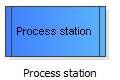

In most cases, one or more process stations are the core of the simulation model. At the process stations the queues exist and the clients are served by the operators. (Again, neither the "clients" nor the "operators" have to be people. Also workpieces can arrive as clients which are to be operated by machines).
To add an element - in this case a process station - to the model, drag it with pressed left mouse button to the drawing surface.
Drag this element from the templates panel to the draw surface:
